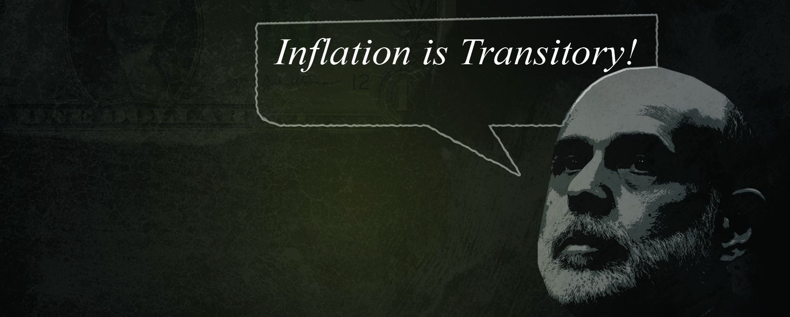

Oswal Trading

- 
Oswal Trading Company is one of the leading players in the field of Equities, Commodities, Mutual Fund & Insurance. Our main area of business
is dealing in Delisted, Unlisted, Non-Traded, Unquoted, Pre-IPO and Rare Indian Shares and Securities. Our expertise allows us to ensure that
customer gain from investing in different portfolios.
Today Oswal Trading is doing business with thousands of customers and is a frontrunner in area of dealing in unlisted shares & securities.
If you want to sell any unlisted/ unquoted, delisted or pre- IPO shares, we would be exhilarated to help you out. Please mail us the list of
shares you own and we will send you our best offer for them.
Mutual Funds
A mutual fund is a professionally managed type of collective investment scheme that pools money from many investors to buy stocks, bonds, short-term money market instruments,
and/or other securities.
Though mutual funds can be divided into different sections depending upon different criterias, funds investing there money in Equity are the
most popular funds due to their higher return value. The Best type of investement is in SIP (Systematic Investement Plans).
Oswal Trading is one of the most banked
upon company when it comes to investment in mutual funds. We handle investment portfolio of hundreds of investors and handle millions of their valuable money. If you have any
query regarding the investment in Mutual Funds, please mail your query on query@oswaltrading.com.
Equity, Commodity & Derivatives
An equity investment generally refers to the buying and holding of shares of stock on a stock market by individuals and firms in anticipation of
income from dividends and capital gains, as the value of the stock rises.
A commodity is the generic term for any marketable item produced
to satisfy wants or needs. We deal in Crude Oil, Gold, Copper, Silver, Chana, Sugar, etc.
A derivative instrument is a contract between
two parties that specifies conditions (especially the dates, resulting values of the underlying variables, and notional amounts) under which
payments, or payoffs, are to be made between the parties.
We at Oswal Trading Company got immense experience dealing above instruments.
We make sure that our customer gets proper guidance before investing in any type of instruments.
Please Contact Us with your queries
and questions.
-
- A B Corporation Ltd(Amitabh Bachchan)
- A V Thomas & Com
- Agritech (India) Ltd
- Ahmedabad Stock Exchange
- Anglo French Drugs & Ind Ltd
- Arch Pharma
- Aricent Tech
- Aspinwall & Company Limited
- Associated Pigments Ltd
- Avery India
- Balanoor Plantations & Ind. Ltd
- Bangalore Stock Exchange
- Bausch & Lomb (Rayban Optics)
- Bennett Coleman
- Bharat Hotels
- Bharat Nidhi (Physical)
- Bharat Nidhi Limited
- Bharat Vikas (BVG India)
- Bharti Tele
- Binani Metals
- Binani Zinc
- Bolton Properties
- Bombay Stock Exchange Ltd
- Bosch Chasis
-
- Cadbury India Ltd
- Calcutta Stock Exchange
- Camac Commercial
- Carrier Airconditioning & Refrig Ltd
- Catholic Syrian Bank
- Cochin International Airport
- Cross Country Hotels Ltd
- Damania Airways
- Dehradun Tea Co. Ltd
- Delhi Stock Exchange
- Delta International
- Eastern Investments Ltd
- ELBEE
- Essar Steel Limited
- Farm Enterprises (Reliance Enter)
- Frick India Ltd
- Gajra Bevelgears Limited
- Govind Sugar Mills Ltd (K.K.Birla Group)
- GPT Infra Projects
- Gujarat Nre Mineral Resources Ltd
- Gujarat Raffia Industries Ltd
-
- Haryana Sheet Glass
- HDFC Life Insurance
- Hind Vidyut Products Ltd
- Hindustan Ceramics
- Hindustan Food
- Hindustan Times
- ICICI Prudential Life Insurance
- India Carbons Ltd
- India Seamless Enterprises
- Indian Tourist Development
- Indo Continental Hotels & Resorts
- Indofil Organics Indus Ltd
- Integrated Hi Tech Software Park
- Interconnected Stock Exchange
- Ircon International Ltd
- Jullundur Motor
- Kanchi Karpooram Ltd
- Kesoram Textiles
- Khaitan Hostable
- KIOCL Limited(Kudremukh Iron)
- Kirloskar Investments
- Lokprakashan Ltd
- Lux Industries Ltd (Housiery)
-
- Madras Aluminium Co Ltd(Vedanta)
- Madras Stock Exchange
- Malanpur Steel
- Mangal Steel Enterprises Ltd
- Manjushree Plantation Ltd
- Matrix Lab (Mylan Pharma)
- Mayank Hotels Ltd
- Mcnally Sayaji EngineeringLtd
- Medinova Diagnostics
- Micro INK (Hindustan Ink)
- Mideast Integrated Steel
- Modern Insulator
- Modern Malleables
- Mohan Meakin Ltd (Breweries)
- MSTC Ltd (Metal Scrap Trade Cor)
- Nandan Cleantec Ltd
- Nath Biogenes (India) Ltd
- National Cereal Products Ltd
- National Stock Exchange
- Nimbus Food
- Nirma Ltd
- Oswal Agro Mills Limited
- Otis Elevator Company (I) Ltd
-
- Pantaloon Industries
- Panther Industrial Products Ltd
- Pasupati Spining Weaving Mills Ltd
- Philips Electronics India Ltd
- PNB Finance
- PNB Finance & Industries Ltd
- Ramaragu Surgical
- Raunak International
- Sahu Properties
- SBI Home Finance
- Sharda Motors
- Shreno Ltd (Alembic Glass)
- Shriram Pistons & Rings Ltd
- Sicom Ltd
- Simpson & Company
- Sistema Shyam Teleservices Ltd
- SMC Global
- Spencer India
- Steel Strips Ltd
- Syngenta India Ltd
- T Stanes & Company
- Tamilnadu Merchantile Bank
- Tata Sons
- Tata Technologies
- Tcs E-serve Limited
- The Bisra Stone Lime Company Ltd (BSLC)
- The Ratnakar Bank Ltd
- Thirumbadi Rubber
- Travancore Rubber & Tea Ltd
- Uniworth Textiles
- Western India Plywood
- Xerox India Ltd
- Yamuna Syndicate
- Do all mutual funds charge fees?Oct242011
- Why do mutual funds charge fees?Sep302011
- Portfolio manager changesAug032011
- Invest in the clone fundJul222011
- How safe is mutual funds?Jun182011
- Benefits of investing in a Mutual FundMay142010
- What is PortfolioApr092010
- What is load?Mar062010
- Return option in systemic investmentFeb202010
- Risks in Mutual FundsJan012010
Do all mutual funds charge fees?
24 Oct 2011
Yes. All mutual funds have fees and expenses that are paid by investors. These costs, like all investing costs, are important because they affect the return on your investment. All funds have ongoing expenses that you will pay as long as you have an investment in the fund. Some funds also require that you pay a sales commission when you buy, sell, or exchange the fund. The charges you pay to buy or sell shares of a fund, plus the annual costs you pay that are associated with operating the fund, affect how much you receive from your investment.
Because investors have many different needs, there are many different types of mutual funds. And the costs you pay for investing in funds take different forms. Understanding these costs, and how they affect your investment, is an essential step in becoming an informed investor.
Why do mutual funds charge fees?
24 Oct 2011Mutual funds provide a variety of investment-related services and benefits that help make saving and investing simple, accessible, and affordable. These benefits and services, however, have a cost. The fees you pay help cover the costs of managing the fund’s portfolio of securities. They also are used to pay for producing account statements, computerized account services, recordkeeping, legal services, printing, and mailing. Some fees also compensate an investment professional for his or her services, especially for the advice he or she provides in helping you select a fund to meet your investment goals.
Should I switch out of a mutual fund if the portfolio manager changes?
24 Oct 2011No. The change of a portfolio manager is not reason, in and of itself, to leave a fund. Instead, monitor the mutual fund closely to make sure the new manager is continuing the old manager's style, and that any changes won't significantly affect your investment. New portfolio managers have been known to take command of a mutual fund and sell off securities, reflecting a change in style. A significant portfolio realignment might mean greater capital gains distributions, and therefore taxes, unless you hold the mutual fund in a tax-sheltered account. On the other hand, if the mutual fund is an index fund or less actively managed, the portfolio manager may not be all that important. Or the new portfolio manager may continue with the old style and perform just fine.
Switch to a mutual fund with a similar investment objective only when the performance of your fund falls off against other funds with the same investment objective, or if your existing fund changes objectives so that it no longer reflects the objective you are seeking.
If a mutual fund closes before I have a chance to invest and a clone is available, should I invest in the clone fund?
24 Oct 2011Most mutual funds close because the portfolio manager feels a larger fund size will hamper his investment flexibility and style. Therefore, it is unlikely that any "clone" fund will in fact be a perfect clone of the original—what would be the point of closing the first one? Clone funds—the Roman numeral II funds—often do not have the same portfolio manager or precisely the same investment strategy as the original. Any mutual fund should be judged independently on its own financial merits.
Almost all fund family Web sites now provide a description of the fund's investment objective along with the name of the portfolio manager.
How safe is mutual funds?
24 Oct 2011All mutual funds have a certain amount of risk involved in investing in them. But that is no reason to not invest. Risk has to be taken in any situation to get good returns. However there are a number of investment strategies that one can employ to insulate oneself against the risks involved in the markets.
There are certain safe investments like blue chip investments and gold investments that have low risk levels. Diversification is another way to make sure that your portfolio is protected. Invest in some amount of risk but make sure that there are safe investments so that the portfolio is protected against market fluctuations.
You should always make sure to conduct proper research into the fund and the fund company that you wish to invest in. Make sure that the company has a good reputation in the market and that the fund has been performing well in the past. Reliance Mutual Funds is one of the best AMC's currently in the country which offers good investment options.
What are the benefits of investing in a Mutual Fund?
24 Oct 2011There are several benefits from investing in a Mutual Fund.
Small investments : Mutual funds help you to reap the benefit of returns by a portfolio spread across a wide spectrum of
companies with small investments. Such a spread would not have been possible without their assistance.
Professional Fund Management : Professionals having considerable expertise, experience and resources manage the pool of money collected by a mutual fund. They thoroughly analyse the markets and economy to pick good investment opportunities.
Spreading Risk : An investor with a limited amount of fund might be able to to invest in only one or two stocks / bonds, thus increasing his or her risk. However, a mutual fund will spread its risk by investing a number of sound stocks or bonds. A fund normally invests in companies across a wide range of industries, so the risk is diversified at the same time taking advantage of the position it holds. Also in cases of liquidity crisis where stocks are sold at a distress, mutual funds have the advantage of the redemption option at the NAVs.
Transparency and interactivity : Mutual Funds regularly provide investors with information on the value of their investments. Mutual Funds also provide complete portfolio disclosure of the investments made by various schemes and also the proportion invested in each asset type. Mutual Funds clearly layout their investment strategy to the investor.
Liquidity : Closed ended funds have their units listed at the stock exchange, thus they can be bought and sold at their market value. Over and above this the units can be directly redeemed to the Mutual Fund as and when they announce the repurchase.
Choice : The large amount of Mutual Funds offer the investor a wide variety to choose from. An investor can pick up a scheme depending upon his risk / return profile.
Regulations : All the mutual funds are registered with SEBI and they function within the provisions of strict regulation designed to protect the interests of the investor.
What is a Portfolio?
24 Oct 2011A portfolio of a mutual fund scheme is the basket of financial assets held by that scheme. It comprises of investments in a variety of securities and asset classes. This diversification helps reduces the overall risk. A mutual fund scheme states the kind of portfolio it seeks to construct as well as the risks involved under each asset class.
What is a load?
24 Oct 2011The charge collected by a Mutual Fund from an investor for selling the units or investing in it. When a charge is collected at the time of entering into the scheme it is called an Entry load or Front-end load or Sales load. The entry load percentage is added to the NAV at the time of allotment of units.
An Exit load or Back-end load or Repurchase load is a charge that is collected at the time of redeeming or for transfer between schemes (switch). The exit load percentage is deducted from the NAV at the time of redemption or transfer between schemes. Some schemes do not charge any load and are called "No Load Schemes"
Do systemic investment plans ensures guarenteed return?
24 Oct 2011Some mutual funds are more risky than others. There really is no guarantee that your investment will give you a positive return after 5 years. Over a 5 year period though with a SIP plan, there is about a 90% probability that you should get a good return. Your probability of a positive return increases with the less risky funds but the probability of a greater return increases with the more risky fund. You would really have to decide yourself on which fund or funds to invest in.
What are the risks involved in investing in a mutual fund?
24 Oct 2011Equity Funds are exposed to market risk i.e. there is a possibility that the price of the stocks in which the Fund has invested could decrease. Of course, the prices may also increase, making it possible for the fund to earn profits.
Debts Funds are exposed to two main risks:
Credit Risk
The company in whose bonds the fund has invested could default on the payment of its interest or principal.
Interest Rate Risk The price of the bond in which the Fund has invested may decrease because of an increase in the interest rates. In general, it is useful to remember that this is a "see-saw" relationship - bond prices (and therefore, NAVs) increase when interest rates decrease and vice versa.